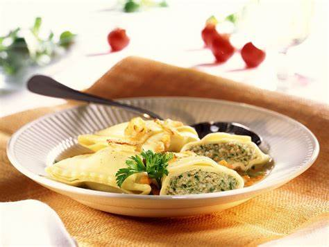

Maultaschen
An Authentic Homemade Maultaschen recipe just the way you know and love them from Germany!
Ingredients (12 servings)
- 1/2 pounds fresh pasta sheets
- 1/2 pound ground pork
- 1/2 pound ground beef
- 1/4 teaspoons salt
- 1/2 teaspoon white pepper
- 1/4 teaspoon black pepper
- 1/3 teaspoon ground mace
- 1/3 teaspoon ground ginger
- 1/3 teaspoon dried marjoram
- 1/4 teaspoon mustard powder
- 1/8 teaspoon ground coriander
- 1/2 tablespoons non-fat milk powder
- 1/2 cup finely chopped parsley
- 1 tablespoon butter
- 1 medium yellow onion
- 1 clove garlic
- 1 bunch (6-8 ounces or 200 grams) spinach
- 2 large eggs
- 1/2 teaspoon salt
- 1/2 teaspoon freshly ground black pepper
- 1/4 teaspoon freshly ground nutmeg
- 8 ounces slightly stale crusty white bread (or fresh croutons)
Preparation
- Place the ground pork and beef, spices and milk powder in the bowl stand mixer fitted with a paddle attachment. Add about 1/2 cup crushed ice to the ground meat mixture in the stand mixture. This will keep the meat cold and prevent the fat from melting as the mixture is mixed/emulsified to create the desired texture.
- Mix the meat on low-medium speed for a few minutes (be careful not toover-mix) until the mixture is emulsified. Meaning if you take a clump ofmeat and pull it apart with your fingers you should see tiny threads pulling apart. Set the meat mixture aside until ready to use.
- Boil the spinach for 1-2 minutes. Drain and rinse under cold water, thoroughly squeeze out the water and very finally chop it. Set aside.
- In a frying pan, heat the butter and saute the onion until soft and translucent, 5-7 minutes. Add the garlic and parsley and cook for another minute ortwo. Let the mixture cool down so it's not super hot.
- Put the meat mixture in a large bowl along with the onion/parsley mixture, the chopped spinach, prepared breadcrumbs, spices and eggs. Use a stand mixer or your hands to thoroughly combine the mixture.
- Place a small spoonful of Maultaschen filling on a square of fresh pasta dough (about 3 1/2 x 3 1/2) leaving about 1/4 inch of space from the edges. Brush the edges with the egg, place another pasta square on top and press down with your fingers to seal.
- To cook the Maultaschen: Bring a large pot of lightly salted water to a low boil. Working in batches so as to not overcrowd, place the Maultaschen in the pot and keep the water at a very gentle simmer. Simmer for 10-15 minutes. Remove the Maultaschen with a slotted spoon and transfer them to a colander to drain.
- To serve: The most traditional way Maultaschen in der Brühe which is warming the Maultaschen in a rich clear broth (usually beef broth) and serving it as a soup.